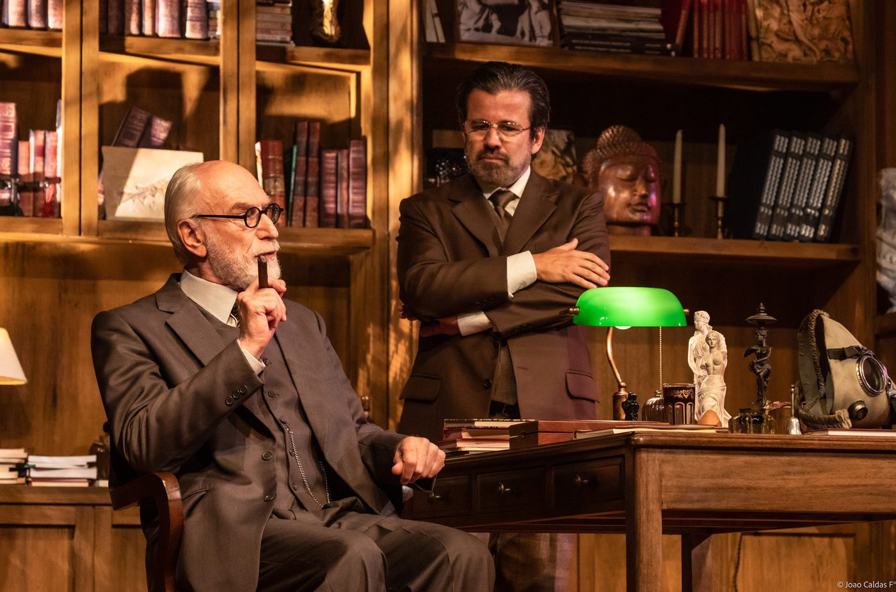

"A Última Sessão de Freud" retorna aos palcos de São Paulo para uma nova temporada no Teatro Vivo

Após conquistar mais de 70 mil espectadores, o espetáculo teatral "A Última Sessão de Freud" está de volta a São Paulo para uma breve temporada, iniciando em 12 de outubro e seguindo até 10 de dezembro, no Teatro Vivo.
Escrito por Mark St. Germain e dirigido por Elias Andreato, o drama histórico, estrelado por Odilon Wagner (indicado ao Prêmio Shell e Prêmio APCA 2022 por este papel) e Claudio Fontana, narra um encontro fictício entre dois ícones intelectuais do século 20: Sigmund Freud, pai da psicanálise, e C.S. Lewis, renomado escritor, poeta e crítico literário.
A trama se desenrola durante um diálogo apaixonado entre Freud, um crítico incisivo da crença religiosa, e Lewis, um ex-ateu e defensor da fé baseada na razão. Baseado no livro "Deus em Questão", escrito pelo Dr. Armand M. Nicholi Jr., professor clínico de psiquiatria da Harvard Medical School, o espetáculo explora temas como a existência de Deus, o sentido da vida, a natureza humana, o sexo, a morte e as relações humanas.
O cenário, assinado por Fábio Namatame (indicado ao Prêmio Shell de melhor cenário), recria o consultório de Freud na Inglaterra durante a Segunda Guerra Mundial, proporcionando um ambiente imersivo para a intensa troca de ideias entre os personagens.
Elias Andreato, o diretor, optou por uma encenação que coloca o texto em primeiro plano, tornando as ideias o foco central da narrativa. Em uma entrevista sobre a peça, o autor Mark St. Germain destaca o embate de ideias, situando o encontro entre Freud e Lewis no contexto da Segunda Guerra Mundial.
Para Odilon Wagner, a experiência de interpretar Freud é fascinante, descrevendo-a como um privilégio e um desafio que o fez mergulhar profundamente na vida e personalidade do renomado psicanalista.
"A Última Sessão de Freud" é uma experiência teatral que mergulha nos recantos mais profundos do pensamento humano, explorando questões atemporais com humor e sagacidade.
Ficha Técnica
Texto: Mark St. Germain
Tradução: Clarisse Abujamra
Direção: Elias Andreato
Assistente de Direção: Raphael Gama
Idealização: Ronaldo Diaféria
Elenco: Odilon Wagner e Claudio Fontana
Cenário e figurino: Fábio Namatame
Assistente de cenografia: Fernando Passetti
Desenho de Luz: Gabriel Paiva e André Prado
Iluminação: Nádia Hinz
Trilha Sonora: Raphael Gama
Arte Gráfica: Rodolfo Juliani
Fotografia: João Caldas
Designer de som: André Omote
Coordenador Geral de Produção: Ronaldo Diaféria
Produtora Executiva: Jade Minarelli
Direção de palco / Contra-regragem: Tadeu Tosta, Vinicius Henrique, Kauã Nascimento e Jonathan Alves
Produtores Associados: Diaféria Produções e Itaporã Comunicação
Serviço
A Última Sessão de Freud, de Mark St. Germain
Teatro: VIVO
Endereço: Av. Chucri Zaidan, 2460 - Vila Cordeiro, São Paulo - SP, 04583-110
Temporada: de 12 de outubro a 10 de dezembro de 2023
Quinta, Sexta e Sábado às 20h e Domingo às 18h
Vendas online: www.freud.art.br e www.sympla.com.br
Formas de Pagamentos aceitas na bilheteria: todas
Classificação: 14 anos
Duração: 90 minutos